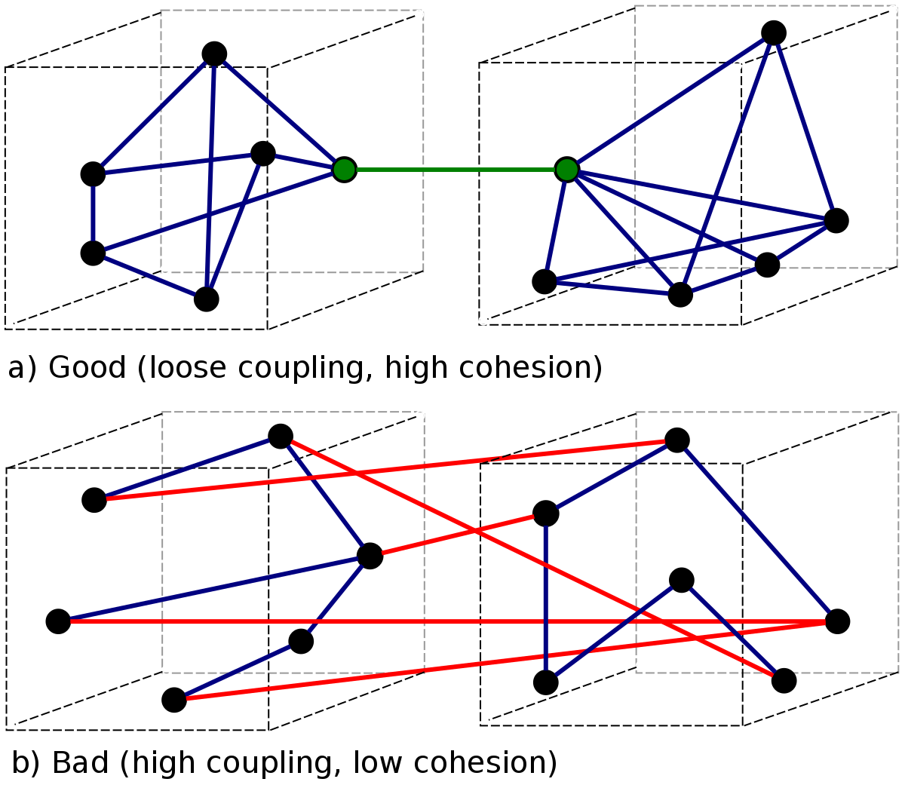
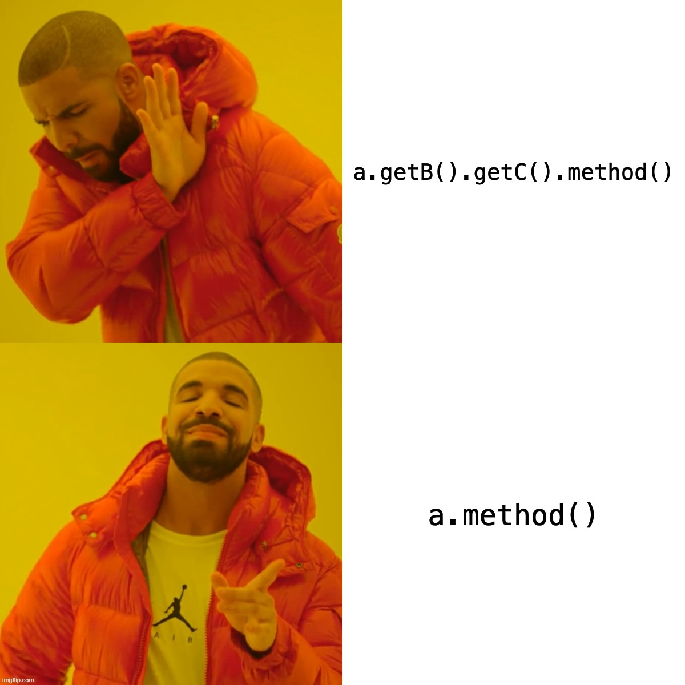
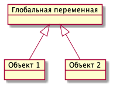
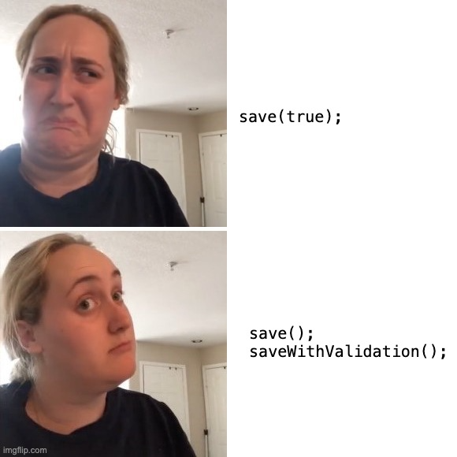
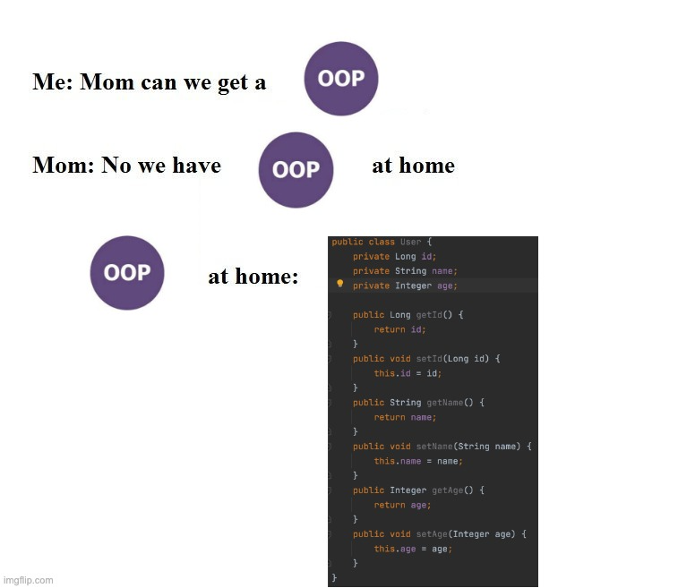

Coupling & Cohesion
Coupling & Cohesion
В основе разработки программного обсеспечение лежит управление сложностью. Добавляя новую функциональность в систему мы неизбежно увеличиваем ее сложность. Но правильные подходы к разработке и хорошо построенная архитектура может замедлить рост сложности. Проблема только в том, что никто не знает как она должна выглядеть, эта хорошо построенная архитектура. Но существуют метрики, которые помогают нам оценить архитектуру, о двух таких метриках я бы и хотел поговорить
- Coupling (Связанность)
насколько сильно связаны друг с другом отдельные модули. - Cohesion (Сочетаемость)
насколько сильны связи внутри модуля.
Используя этим метрики можно анализировать не только архитектуру отдельного приложения, но и целых систем, состоящих из многих сервисов, поэтому в определении используется слово модуль. Сами термины были введены Ларри Константином в конце 60-ых годов, позже в 1974 детально описаны в его книге Structured Design. Считается, что хорошо спроектированная система обладает низкой связанностью и высокой сочетаемостью (Low coupling & High cohesion).

Coupling
Сначала поговорим о связанности, метрике, которая показывает насколько сильна связь между двумя модулями. Чем сильнее связанны модули, чем больше самих связей между ними, тем вероятнее, что изменения в одном из них затронут остальные. Высокий уровень связанности усложняет рефакторнинг и доработку кода. Рассмотрим какие бывают типы связей в порядке от самых сильных к слабым.
Content Coupling
Возникает, когда один модуль полагается на внутренние особенности реализации другого модуля.
Связанность по содержимому является наруешнием принципа инкапсуляции. Изменение имплементации одного модуля приведет к переписыванию другого. Пример content coupling:
public class ShopService { public void addNewItem(Order order, OrderItem newItem) { order.getItems().add(newItem); order.setSum(order.getSum() + newItem.getPrice()); } }
Этот код зависит от внутреннего строения класса Order. Если мы захотим поменять тип списка товаров items внутри Order или, например, сумму в виде числа заменить классом Money, то это приведет к рефакторингу функции addNewItem и всех остальных мест, где используется класс Order.
Так же в этой функции мы делаем предположение о связях между полями внутри самого класса Order, что при добавлении нового продукта необходимо добавить его стоимость к сумме.
Поскольку метод setSum публичный, то его можно вызвать из любого места приложения, и значит в каждом из этих мест мы должны проверять, что правильно рассчитали сумму. Если же алгоритм расчета суммы меняется - все становится еще хуже.
Вместо этого модули должны обращаться друг к другу только через интерфейс. Уберем всю логику по добавлению нового товара в класс Order, чтобы избавится от content coupling:
public class OrderService { public void addNewItem(Order order, OrderItem newItem) { order.addItem(newItem); } }
Теперь класс OrderService не зависит от внутреннего строения класса Order. Класс Order проще тестировать и переиспользовать в других местах, так как вся логика инкапсулирована в методе addItem и сам класс заботится о выполнении всех бизнес правил, описывающих его возможные состояния. Меняя внутреннюю структуру класса Order нам не придется переписывать код, который использует этот класс.
Можно сказать, что при данном рефакторинге мы последовали закону Деметры, или принципу наименьшего знания, как его иногда называют.
Law of Demeter
Объект должен иметь как можно меньше представления о структуре и свойствах другого объекта.
Закон Деметры был сформулирован в 1987 году, он служит для уменьшения связанность между компонентами системы. В языках где для доступа к вложенным структурам используется точка можно упростить его до правила одной точки.

Common Coupling
Возникает между модулями, когда они работают с общими данными читая и изменяя их.
Например, два класса модифицируют одну глобальную переменную или два сервиса пишут в одну и ту же таблицу в БД. При наличае common coupling становится сложно проследить, почему значение разделяемого ресурса стало именно таким, так как оно может поменяться в любой момент и из разных мест. Это может привести к трудно отлавливаемым ошибкам. Также, при внесении изменений в структуру разделяемого ресурса, придется менять все работающие с ним модули. Модули работающие с глобальными переменными практически не пригодны к переиспользованию.
Важно обратить внимание, что проблемы от такого вида связанности возникают в случае, если оба модуля ИЗМЕНЯЮТ общие данные. Если же в качестве общих данных глобальный набор констант или меняет общий ресурс один модуль, а остальные только читают, то такой вид связанности обычно менее болезненный.
На практике такой вид связанности возникает не часто, так как в сознание разработчиков на старте карьеры закладывают убеждение, что глобальные переменные - это плохо, а БД у каждого микросервиса должна быть своя.

Control Coupling
Возникает, когда один модуль управляет поведением другого, через передачу каких-то данных или флагов управления.
Например:
class OrderService { private ReportBuilder reportBuilder; public void placeOrder() { // ... byte[] report = reportBuilder.build(orderData, ReportType.PDF); } }
class ReportBuilder { public byte[] build(ReportData data, ReportType type) { switch (type) { case XML: return buildXmlReport(data); case PDF: return buildPdfReport(data); } } private void buildXmlReport() { ... } private void buildPdfReport() { ... } }
Можно сказать, что в классе ReportBuilder представлены несколько имплементаций метода build. Часто в таких классах большое количество зависимостей, часть из которых нужна только для первого алгоритма, а другая часть только для второго, что будет доставлять неудобства при тестировании.
OrderService в этой ситуации выступает как координатор, он говорит что необходимо сделать и какой результат он ожидает.
В ООП объекты должны сами принимать решения, в зависимости от входных аргументов или внутреннего состояния.
Control coupling в этом примере можно убрать используя полиморфизм и паттерн фабрика. Каждый алгоритм из ReportBuilder переносим в отдельный класс.
class OrderService { private ReportBuilder reportBuilder; public void placeOrder() { // ... byte[] report = reportBuilder.build(orderData); } }
public interface ReportBuilder { byte[] build(); } public class XmlReportBuilder implements ReportBuilder { } public class PdfReportBuilder implements ReportBuilder { }
Таким образом мы изолировали каждый алгоритм в отдельном классе, что гораздо удобнее с точки зрения тестирования и понимания кода. Добавление новых типов отчетов не потребует изменения класса OrderService.
Так же control coupling можно избежать передавая не флаги управления, которые говорят, что нужно сделать. А некий объект-контекст, описывающие ситуацию, на основании которого сам модуль может приянть решение что ему делать.
Как один из примеров control coupling часто встречаются методы, принимающие boolean флаги, котрые определяют их поведение.
Помимо связанности тут еще присутствует проблема boolean blindness. Догадаться что означает этот true без чтения кода метода абсолютно невозможно. В данном случае можно просто разделить метод на два:

Stamp Coupling
Возникает, когда модули обмениваются друг с другом данными через структуру, но при этом из этой структуры модули используют не все поля.
class ValidatorService { public boolean validateEmail(Customer customer) { var email = customer.getEmail(); return EMAIL_REGEX.matcher(email).find(); } }
class Customer { private String firstName; private String lastName; private LocalDate birthDate; private String livingAddress; private String email; }
В примере видно, что в функцию validateEmail передается вся структура Customer, хотя реально из нее используется только одно поле. Такой вид связанности несет сразу несколько проблем.
Страдает читбельность, без чтения кода только по сигнатуре функции невозможно понять, какие поля структуры в ней используются, почему туда передается объект целиком.
Функцию validateEmail сложно переиспользовать, так как при вызове необходимо передавать всю структуру Customer в качестве аргумента. По этой же причине ее сложно тестировать.
Иногда такой подход приводит к превращению класса Customer в свалку не связанных между собой данных, для того чтобы удоволетворить сразу несколько подобных методов.
Пример выше можно переписать следующем образом:
class ValidatorService { public boolean validateEmail(String email) { return EMAIL_REGEX.matcher(email).find(); } }
Так мы переделали stamp coupling в data coupling.
Data Coupling
Возникает, когда модули обмениваются друг с другом данными через структуру, при этом используется каждое поле в этой структуре.
Этот вид связи возникает, когда один модуль передает данные в другой в виде параметров вызова функции. В отличае от stamp coupling передаются только необходимые данные. Если передается структура, то принимающий модуль должен использовать все ее поля. Data Coupling считается слабой связью к которой следует стремиться.
Message coupling
Модули общаются только через передачу сообщений или вызовы методов без параметров.
Модули могут обмениваться сообщениями как внутри одного приложения, используя фреймворки вроде akka так и используя внешнее ПО вроде Kafka или RabbitMQ.
Cohesion
Сочетаемость (cohesion) — мера того, насколько функционально взаимосвязанны компоненты внутри модуля (сервиса, класса, функции). Насколько элементы внутри модуля нуждаются друг в друге. Низкая сочетаемость внутри модуля означает, что он решает много не связанных друг с другом задач. Высокая сочетаемость означает, что весь код внутри модуля сфокусирован на решении одной конкретной задачи.
Это чем-то похоже на принцип единства ответственности (SPR) из SOLID, сформулированный Робертом Мартином. Принцип гласит, что класс должен иметь только одну причину для изменения. Считается, что в хорошо спроектированной программе присутствует сильная сочетаемость внутри модулей. Рассмотрим некоторые виды сочетаемости в порядке от самых слабых к сильным.
Coincidental cohesion
Слабейший из видов связанности. Когда элементы внутри модуля собраны по случайному принципу и никак друг с другом не связаны.
Часто возникает в класах или пакетах со словом utils в названии.
Logical cohesion
Логическая сочетаемость возникает, когда части модуля логически делают похожие вещи, но никак друг с другом не связаны с точки зрения бизнес смысла.
До этого мы в качестве модуля рассматривали классы. Для иллюстрации логической сочетаемости давайте поднимимся на уровень пакетов.
📁 dao 📁 service 📁 model ☕ Application.java
Как часто открывая новый проект мы видим такую схему проектов? Вы можете сказать что делает этот сервис?
📁 dao
☕ OrderDao.java
☕ UserDao.java
☕ PostDao.java
📁 service
☕ User.java
☕ OrderService.java
☕ UserService.java
📁 model
☕ Order.java
☕ OrderItem.java
☕ OrderState.java
☕ Comment.java
☕ Post.java
📁 orders
☕ Order.java
☕ OrderItem.java
☕ OrderState.java
☕ OrderDao.java
☕ OrderService.java
📁 users
☕ User.java
☕ UserDao.java
☕ UserService.java
📁 reviews
☕ Post.java
☕ Comment.java
☕ PostDao.java
Слева мы видим, что присутствует сильная связанность между пакетами (OrderService наверняка использует Order, OrderItem и OrderDao). И низкая сочетаемость внутри пакетов, между OrderDao и UserDao есть только логическая сочетаемость, оба класса реализуют доступ к БД, но при этом больше у них нет ничего общего. Функционально это разные области.
Деление классов на пакеты исходя из их функционального смысла лучше, так как такой код проще читать и поддерживать. В 2011 году Роберт Мартин (Дядя Боб) ввел в обиход термин “Кричащая Архитектура”. Он утверждал, что сама архитектура приложения должна кричать о том какую функцию выполняет систем. Организация модулей слева же “кричит” только о паттернах, которые мы используем, но разве это так важно?
Конечно, в маленьком сервисе, состоящем из десятка классов все это не играет большой роли. Маленькие утилиты или небольшие сервисы вообще можно писать как угодно, пока весь их код свободно умещается в голове. Попытки использовать в таких системах паттерны и подходы, призванные бороться со сложностью, наоборот приводят только к ее росту.
На уровне класса можно привести следующий пример логической сочетаемости, которую часто можно встретить в коде:
public MessageSenderService { public void sendOrderProcessedEvent() { ... } public void sendReportMessage() { ... } public void sendEmailNotification() { ... } }
Единственное, что связывает методы в этом классе, это то что все они отправляют сообщения в некую очередь и больше ничего. Почему именно это иногда становится причиной для объединения методов в один класс - сказать сложно. Особенно когда даже нет класса, который бы использовал больше одного из этих методов.
Temporal cohesion
Элементы группируются в одном модуле, так как вызываются в одно время, но функционально никак друг с другом не связаны.
Часто такой тип сочетаемости появляются у функций инициализации, собранных в одном классе. Например:
public interface ApplicationInitializer { void initDatabase(); void initPrinterService(); void initFtpSerivce(); }
Низкая сочетаемость этих методов друг с другом и сильная связанность с другими модулями приводит к проблемам с переиспользованием данного кода. Мы не можем использовать функции модуля FTP, если перед этим не подключили модуль ApplicationInitializer и не вызвали процедуру initFtpSerivce() из него.
В качестве возможного рефакторинга стоит вынести каждую функцию инициализации в соответствующий модуль и запускать ее при инициализации самого модуля.
Procedural cohesion
Процедурная сочетаемость похожа на временную сочетаемость, но с дополнительным ограничением, что порядок вызова функций имеет значение.
Например:
public class RegistrationService { public void registerUser(String email) { validateEmail(email); User user = createNewUser(email); loadProfileFromFacebook(user); checkVipStatus(user); sendGreetings(user); } }
public interface UserService { void validateEmail(String email); User createNewUser(String email); void loadProfileFromFacebook(User user); void checkVipStatus(User user); void sendGreetings(User user); }
Последовательность вызовов процедур UserService этого класса должна сохраняться, мы же не хотим зарегистрировать пользователя с невалидным email или послать приветствие до того как получили его профиль на Фейсбуке. Узнать правильный порядок вызова этих процедур можно только полностью изучив код UserService. Из за этого пользоваться таким классом крайне неудобно, а код, который его использует, сложно поддается рефакторингу.
Глядя на код registerUser сложно сказать, каким должен быть объект user перед вызовом очередной процедуры, или что в нем поменяется после вызова. А изменение порядка вызова процедур может сломать весь алгоритм. Поддержка такого кода требует от программиста полной концентрации и внимания, любое неосторожное движение приведет к возникновению ошибки.
К сожалению, такой код встречается крайне часто и обладает всеми недостатками процедурного программирования.
Правильный подход, которого нужно придерживаться, “делайте неправильные состояния невозможными”. Если какие-то состояния в вашей программе не имеют смысла напишите код так, чтобы приложение никогда не могло попасть в это состояние. Гарантированно можно это сделать только при помощи компилятора. Тесты могут дать нектороую уверенность в коде, но, во-первых, только на множестве входных данных, которое вы сами определили, во-вторых, хорошо разработанные тесты это еще более редкое явление, чем хорошо написанный код.
Давайте посмотрим, как мы можем переписать пример выше, чтобы сделать этот код более устойчивым к ошибкам. Следующие виды связанности считаются одинаково предпочтительными
Sequential cohesion
Сочетаемость по последовательности действий возникает в случае если результат работы одной части модуля является исходными данными для другой.
Пример sequential cohesion:
public class RegistrationService { public void registerUser(String emailStr) { Email email = validateEmail(emailStr); User user = createNewUser(email); UserProfile profile = loadProfileFromFacebook(user); VipStatus vipStatus = checkVipStatus(user); sendGreetings(profile, vipStatus); } }
public interface UserService { Email validateEmail(String email); User createNewUser(Email email); UserProfile loadProfileFromFacebook(User user); VipStatus checkVipStatus(User user); void sendGreetings(UserProfile profile, VipStatus vipStatus); }
В данном случае последовательность вызовов функций не имеет значения, так как благодаря системе типов мы просто не сможем, их вызывать в неправильном порядке.
Communication cohesion
Сочетаемость по взаимодействию возникает, когда группируется в один модуль все функции, которые работают с одними и теми же входными или выходными данными.
Например:
interface OrderService { public void addItem(Order order, Item item); public void deleteAllItems(Order order); public Money calculateTotalSum(Order order); public void startDelivery(Order order); }
Все методы принимают объект Order.
interface ComputerFactory { public Computer newServer(Integer ram, Integer hdd, Integer cpu); public Computer newPc(Monitor monitor, Mouse mouse, SystemUnit unit); public Computer newNotebook(Model model); }
Все методы возвращают объект Computer.
Подобные классы сосредоточены на операциях, которые можно произвести над сущностью или на разных способах как получить сущность. Их достаточно легко переиспользовать целиком в разных частях программы. Также примером сочетаемости по взаимодействию можно считать классы в ООП, так как они по определению представляют из себя набор данных и функций, которые с ними работают.
class User { private Long id; private Image avatar; private String email; private List<Orders> orders; private List<Review> reviews; public void changeAvatar(Image image) { ... } public void resetPassword() { ... } public void placeNewOrder(Order order) { ... } public void postReview(Review review) { ... } public void assignVipStatus() { ... } }
Заметьте, что в приведенном примере у класса нет ни сеттеров, ни геттеров на каждое поле, их вообще в принципе не должно быть в ООП коде. Сеттеры подразумевают, что существует какой-то внешний, по отношению к классу код, который принимает решения на счет данных внутри этого класса, а это является нарушением принципа инкапсуляции.
Несмотря на то, что все функции в классе User работают с одними и теми же данными, все же функционально их можно поделить на несколько областей: управление профилем пользователя, заказами и отзывами. Если в программе эти три области разделены на отдельные модули и имеют четкие границы, то не нужно боятся в каждом модуле сделать свой класс User с релевантным набором функций и данных, объединенных между собой только общим идентификатором.
Не смотря на то, что физически пользователь один, в разных контекстах нас могут интерисовать разные его стороны. Не делая такое разделение мы увеличиваем связанность между модулями, которые используют общий класс User. При этом сам класс User становится сложным для понимания и тестирования из за своих размеров.

Давайте рассмотрим как мы можем поделить OrderService согласно функциям, которые он реализует.
Например, мы можем его поделить на класс, управляющий корзиной, калькулятор и класс отвечающий за доставку.
interface OrderService { public void addItem(Order order, Item item); public void deleteAllItems(Order order); public Money calculateTotalSum(Order order); public void startDelivery(Order order); }
interface OrderCart { public void addItem(Order order, Item item); public void deleteAllItems(Order order); } interface OrderCostCalculator { public Money calculateTotalSum(Order order); } interface OrderDelivery { public void startDelivery(Order order); }
Обратите внимание, за счет этого разделения по функциональности имена наших классов стали более конкретными. И сами классы теперь сфокусированы на исполнение ровно одной функции.
Надо заметить, что такое разделение имеет смысл только если каждый из новых классов используется отдельными потребителем. Иначе, если потребитель OrderService был только один, таким разделением мы только увеличим количество связей в сисеме.
Coupling & OOP
Subclass coupling
Описывает отношения между родительским и дочерним классом.
Давайте проанализируем наследование относительно связанности. Под наследованием далее я подразумеваю расширение базового класса в Java через ключевое слово extends, имплементация интерфейсов это тема отдельного разговора.
Наследование создает сильнейшую из возможных связей и использовать его стоит с большой осторожностью. Существует такое понятие, как “Хрупкий базовый класс”, это считается фундаментальной проблемой в ООП.
Fragile base class problem
Проблема хрупкого базового класса заключается в том, что малейшие правки в деталях реализации базового класса могут привнести ошибку в производные классы. В худшем случае это приводит к тому, что любая успешная модификация базового класса требует предварительного изучения всего дерева наследования, и зачастую невозможна (без создания ошибок) даже в этом случае. В общем случае проблема не решаема, и является одним из существенных недостатков наследования в ООП.
Рассмотрим пример “хрупкого” базового класса. Мы хотим разработать коллекцию Set, которая бы могла быстро ответить, сколько элементов в нее добавлено. Предположим, что мы отнаследовались от HashSet и переопределили методы добавления элементов в коллекцию.
public class CountingSet<E> extends HashSet<E> { private int count; @Override public boolean add(E e) { count++; return super.add(e); } @Override public boolean addAll(Collection<? extends E> c) { count += c.size(); return super.addAll(c); } @Override public int size() { return count; } }
Что по вашему мнению выведет данный код:
var set = new CountingSet<Integer>(); set.addAll(List.of(42, 0, 12)); System.out.println("Set size: " + set.size());
Правильный ответ: зависит от имплементации addAll у базового класса. Например, в данном случае вызовется метод AbstractCollection.addAll, который реализован через вызов метода add(E e) в цикле, но при этом будет вызываться наш, переопределенный метод add и соответственно счетчик будет увеличиваться два раза. Размер коллекции будет равен 6.
Допустим, мы подстроимся под имплементацию и уберем наращивание счетчика из addAll. Теперь наш код работает правильно, но ровно до того момента, пока какой-нибудь класс в цепочке наследников между нашим CountingSet<E> и интерфейсом Collection<E> не задумается об оптимизации и не переопределит addAll убрав из него добавление элементов по одному через метод add. И наш класс снова работает неправильно.
Low coupling & High cohesion
Модули, которые следуют принципам слабой связаности и высокой сочетаемости, обладают следующими свойствами:
- Изменения в одном модуле не влияют на остальные модули
- Проще разбираться в коде модуля, без необходимости изучать остальные модули
- Удобство в переиспользовании
Coupling влияет на то, насколько просто нам поменять код, когда нам это нужно. Сколько мест нам нужно поменять и как будут эти изменения распространяться на остальную систему. Сильно связанные модули не обладают гибкость, их сложно переиспользовать в других местах и как следствие плохо поддаются тестированию. При изменении одного класса в сильно связанной программе часто необходимо внести изменения и в другие. В небольшой программе это не страшно, часто мы легко можем понять, что затронут наши изменения, шанс допустить ошибку невелик. Но с ростом приложения эти неявные взаимосвязи не всегда известны всем разработчикам и вероятность ошибки сильно возрастает.
Cohesion влияет на то, как быстро мы можем понять где нам нужно поменять код. Как только находим одно место, которое необходимо поменять есть высокая вероятность, что рядом будут и остальные места, которые нужно изменить. Низкая сочетаемость означает, что код, который реализуют какую-то функцию или бизнес процесс в приложении размазан по всей кодовой базе. Из за этого тяжело понять, какой код относится к конкретному функционалу и приходится постоянно переключаться между модулями, для того чтобы построить в голове общую картину.
Чтобы определить, на сколько ваш код соответствует принципам низкой связанности и высокой сочетаемости можно задать себе вопросы из книги Программист прагматик. Когда вы сталкиваетесь с проблемой, оцените, насколько локален процесс ее устранения. Нужно изменить лишь один модуль, или изменения должны происходить по всей системе? Когда вы меняете что-либо, устраняются ли при этом все ошибки или происходит загадочное появление новых?
Coupling и Cohision всегда упоминают в паре, и это не случайно. На практике это две силы, которые противоречат друг другу. То есть, чтобы создать максимально слабосвязанную систему можно просто поместить весь код в один файл. Нет модулей - нет связй между ними - нет проблем. Но при этом такой код будет обладать слабой сочетаемостью, так как код внутри файла будет решать функционально разные проблемы. С другой стороны, чтобы добиться максимального Cohesion нужно выделить каждую функцию в отдельный класс. Но в такой системе будет очень сильный Coupling между такими классами.
Часто, когда разработчик пытается реализовать рекомендации по низкому coupling, высокому cohesion, он или она прикладывает слишком много усилий к реализации первой рекомендации (низкий coupling) и полностью забывает о другой. Это приводит к ситуации, когда код действительно разделен (decoupled), но в то же время не имеет четкой направленности. Его части настолько отделены друг от друга, что становится трудно или даже невозможно понять их значение. Эта ситуация называется деструктивной развязкой (destructive decoupling).
Собственно задача программиста при написанни кода соблюдать баланс между этими двумя понятиями - связанность и сочетаемость.
Design is About Balancing Cohesion and Coupling (not blindly following principles) – Copeland